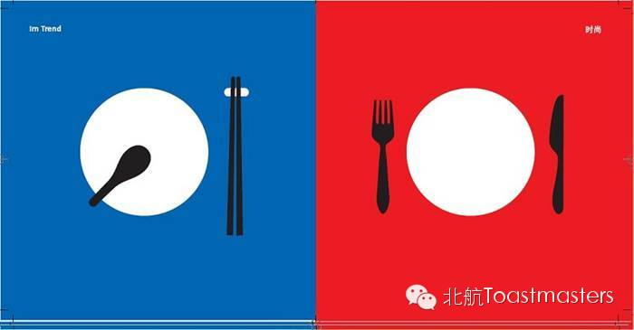

Beihang Toastmasters Club 53rd Meeting
Time: Friday Mar.28 19:30-21:30
Venue: Room A212, New Main Building, Beihang University
Table Topics

Table Topic Master: Peter
Table Topic Evaluator: Deron
Both members and guests are welcomed to join the table topic section. In this section, you can get a chance to “Face your fear” and overcome it by giving a 2mins impromptu speech, which will be prepared by the Table Topic Master, Peter. Each speaker will also receive an evaluation, given by Deron, that points out the highlights and improvements in the speech.
Prepared Speech
CC3 Keven
What is Bitcoin?
Evaluator: Peter
What is Bitcoin? To a liberal arts major student, like me, “Bitcoin” does not make any sense, and even after I “Baidu”ed the word, I still raised my eyebrows. Do you know what bitcoin is? Let’s listen to Keven’s Competent Communication Project 3 and find the answer together.
/////////////////////////////////////////////
官方微信号【beihangtmc】
提示：长按方括号中的微信号可复制，然后在查找公众帐号时，长按输入框即可粘贴微信号
路线
回复r即可查看路线地图